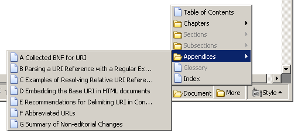
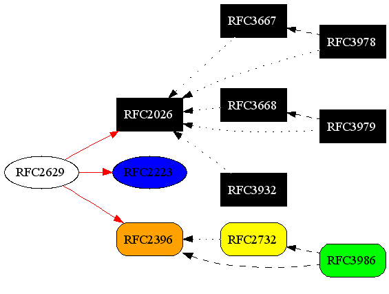

| RFC2629 through XSLT | J. Reschke |
| greenbytes | |
| March 2012 |
Transforming RFC2629-formatted XML through XSLT
This document describes a set of XSLT transformations that can be used to transform RFC2629-compliant XML (see [RFC2629]) to various output formats, such as HTML and PDF. The main topics are
The full distribution is available at <http://greenbytes.de/tech/webdav/rfc2629xslt.zip>.
rfc2629.xslt supports both all RFC2629 grammar elements and the extensions implemented in xml2rfc 1.36.
rfc2629.xslt supports two kind of extension elements, using different XML namespaces.
The first set contains (hopefully) generally useful extensions, see Section 11.
The second set is used for change and issue tracking and currently is not documented here. Please email the author in case you're interested in using these extensions.
All PIs can be set as XSLT parameter as well, overriding any value that is found in the source file to be transformed.
Using processing instructions:
<?rfc toc="yes"?> <?rfc-ext support-rfc2731="no"?>
Using XSLT parameters (Saxon):
java -cp saxon.jar com.icl.saxon.StyleSheet source.xml rfc2629.xslt \ xml2rfc-toc=yes xml2rfc-ext-support-rfc2731=no > result.html
Using XSLT parameters (xsltproc):
xsltproc --param xml2rfc-toc '"yes"' \ --param xml2rfc-ext-support-rfc2731 '"no"' \ rfc2629.xslt source.xml > result.html
(note the required quoting of string parameters)
| PI target | PI pseudo-attribute | XSLT parameter name | default | comment |
|---|---|---|---|---|
| rfc | background | xml2rfc-background | (not set) | |
| rfc | compact | xml2rfc-compact | "no" | only applies to HTML output method when printing |
| rfc | comments | xml2rfc-comments | (not set) | |
| rfc | editing | xml2rfc-editing | "no" | |
| rfc | footer | xml2rfc-footer | (not set) | |
| rfc | header | xml2rfc-header | (not set) | |
| rfc | inline | xml2rfc-inline | (not set) | |
| rfc | iprnotified | xml2rfc-iprnotified | "no" | |
| rfc | linkmailto | xml2rfc-linkmailto | "yes" | |
| rfc | private | xml2rfc-private | (not set) | |
| rfc | refparent | xml2rfc-private | "References" | Title for References sections when automatically inserted |
| rfc | rfcedstyle | xml2rfc-rfcedstyle | (not set) | (limited support) |
| rfc | sortrefs | xml2rfc-sortrefs | "no" | |
| rfc | symrefs | xml2rfc-symrefs | "yes" | The default has changed from "no" to "yes" as of June 6, 2007 and xml2rfc 1.33pre4. |
| rfc | toc | xml2rfc-toc | "no" | |
| rfc | tocdepth | xml2rfc-tocdepth | 99 | |
| rfc | topblock | xml2rfc-topblock | "yes" |
| PI target | PI pseudo-attribute | comment |
|---|---|---|
| rfc | include | incompatible with XML/XSLT processing model, please use external entities instead |
| rfc | needLines | |
| rfc | slides | |
| rfc | strict | |
| rfc | subcompact | |
| rfc | tocindent | (defaults to "yes") |
| rfc | tocompact |
| PI target | PI pseudo-attribute | XSLT parameter name | default | description |
|---|---|---|---|---|
| rfc-ext | allow-markup-in-artwork | xml2rfc-allow-markup-in-artwork | "no" | Enables support for specific elements inside abstract elements (using this extension makes the document incompatible to the RFC2629bis DTD; see description of conversion XSLT in Section 12.4). |
| rfc-ext | authors-section | xml2rfc-ext-authors-section | When "end", place the authors section at the end (just before the copyright statements). This seems to be the preferred order in the newest RFCs. | |
| rfc-ext | duplex | xml2rfc-ext-duplex | no | When set to "yes", format the PDF output for doublesided printing. |
| rfc-ext | include-index | xml2rfc-ext-include-index | "yes" | When set to "no", no index will be generated. |
| rfc-ext | include-references-in-index | xml2rfc-ext-include-references-in-index | When set to "yes", index entries are generated for all references. | |
| rfc-ext | justification | xml2rfc-ext-justification | "never" | "never": never emit justified text, "always": always emit justified text, "print": only emit justified text for print media. |
| rfc-ext | parse-xml-in-artwork | xml2rfc-parse-xml-in-artwork | "no" | May be used to enable parsing of XML content in figures (MSXML only). |
| rfc-ext | support-rfc2731 | xml2rfc-ext-support-rfc2731 | "yes" | Decides whether the HTML transformation should generate META tags according Section 6.4. |
| rfc-ext | sec-no-trailing-dots | xml2rfc-ext-sec-no-trailing-dots | When set to "yes", add trailing dots to section numbers. This seems to be the preferred format in the newest RFCs. |
The transformation automatically generates anchors that are supposed to be stable and predictable and that can be used to identify specific parts of the document. Anchors are generated both in HTML and XSL-FO content (but the latter will only be used for PDF output when the XSL-FO engine supports producing PDF anchors).
The following anchors get auto-generated:
| Anchor name | Description |
|---|---|
| rfc.abstract | Abstract |
| rfc.authors | Authors section |
| rfc.copyright | Copyright section |
| rfc.copyrightnotice | Copyright notice |
| rfc.figure.n | Figures (titled) |
| rfc.figure.u.n | Figures (untitled) |
| rfc.index | Index |
| rfc.ipr | Intellectual Property |
| rfc.iref.n | Internal references |
| rfc.note.n | Notes (from front section) |
| rfc.references | References |
| rfc.references.n | Additional references |
| rfc.section.n | Section n |
| rfc.section.n.p.m | Section n, paragraph m |
| rfc.status | Status of memo |
| rfc.table.n | Tables (titled) |
| rfc.table.u.n | Tables (untitled) |
| rfc.toc | Table of contents |
| rfc.xref.name.n | References to reference n to name |
The transformation requires a non-standard extension function (see exsl:node-set) which is however widely available. XSLT processors that do not support this extension (or a functional equivalent, such as msxsl:node-set) currently are not supported.
Input documents do not always specify the date completely. In this case, the transformation attempts to let the XSLT engine to compute the system date, using either scripting in Microsoft's XSLT engine, or the exsl:date-time extension function.
The following XSLT engines are believed to work well:
The following browsers seem to work fine:
Internet Explorer 5.5 (Windows version, if MSXML3 is installed)
Internet Explorer 6 and newer
Firefox 3.0 and newer
Safari 3 (starting with version 3.0.4)
Google Chrome
Opera (starting with version 10)
The following browsers are known not to work properly:
Firefox 1.*/2.*: (missing extension function - see change request at Mozilla BugZilla 193678)
Opera 9.21: execution fails, potentially to a somewhat complex XPath expression (reported to Opera as bug 245725).
Opera 9.5 and 9.6: transformation appears to work, but CSS isn't getting applied (reported to Opera as bug 337388 on 2008-06-12).
Safari 2.* supports client-side XSLT as of MacOS X 10.4, but misses required extension functions. A problem with stylesheets producing non-ASCII output (such as NBSP characters) has been fixed as of OSX 10.4.4. Both problems have been reported through Apple's bug tracking system, see <http://drakken.dbc.mtview.ca.us/pipermail/xml2rfc/2005-May/002073.html> and <http://bugs.webkit.org/show_bug.cgi?id=4079>.
Transformation to HTML can be done inside the browser if it supports XSLT. To enable this, add the following processing instruction to the start of the source file:
<?xml-stylesheet type='text/xsl' href='rfc2629.xslt' ?>
(and ensure that rfc2629.xslt is present).
The transformation result is supposed to conform to the HTML 4.01 strict DTD [HTML]. This can be checked using the W3C's online validator at <http://validator.w3.org>.
LINK elements exist since HTML 2.0. They can be used to embed content-independant links inside the document. Unfortunately, only few user agents support this element. Firefox users may want to check the Link Widgets extension.
The following LINK elements are produced:
| LINK type | description |
|---|---|
| alternate | for RFCs, a link to the authorative ASCII version on the IETF web site |
| appendic | pointer to all top-level appendics |
| author | pointer to "authors" section |
| chapter | pointer to all top-level sections |
| contents | pointer to table of contents |
| copyright | pointer to copyright statement |
| index | pointer to index |
The figure below shows how Mozilla Firefox 1.0 displays the Site Navigation Bar for rfc2396.xml.

The following standard HTML META elements are produced:
| META name | description |
|---|---|
| generator | from XSLT engine version and stylesheet version |
| keywords | from keyword elements in front section |
Unless turned off using the "rfc-ext support-rfc2731" processing instruction, the transformation will generate metadata according to [RFC2731] and [DC-HTML].
The following DCMI properties are produced:
| META name | description |
|---|---|
| DC.Creator | from author information in front section |
| DC.Date.Issued | from date information in front section |
| DC.Description.Abstract | from abstract |
| DC.Identifier | document URN [RFC2648] from "docName" attribute |
| DC.isPartOf | RFC ISSN (for RFCs) |
| DC.Relation.Replaces | from "obsoletes" attribute |
The generated author information is formatted in hCard format.
Transforming to XHTML requires slightly different XSLT output options and is implemented by the derived transformation script rfc2629toXHTML.xslt.
To generate a CHM file using Microsoft's HTML Help Compiler (hhc), three files are required in addition to the HTML file.
The three files are generated with three specific transformations, each requiring the additional XSLT parameter "basename" to specify the filename prefix.
Example:
saxon rfc2616.xml rfc2629toHhp.xslt basename=rfc2616 > rfc2616.hhp saxon rfc2616.xml rfc2629toHhc.xslt basename=rfc2616 > rfc2616.hhc saxon rfc2616.xml rfc2629toHhk.xslt basename=rfc2616 > rfc2616.hhk hhc rfc2616.hhp
Transformation to XSL-FO [XSL-FO] format is available through rfc2629toFO.xslt (which includes rfc2629.xslt, so keep both in the same folder).
Compared to HTML user agents, XSL-FO engines unfortunately either come as open source (for instance, Apache FOP) or feature-complete (for instance, AntennaHouse XSL Formatter), but not both at the same time.
As Apache FOP needs special workarounds (index generation), and some popular extensions aren't standardized yet, the translation produces a generic output (hopefully) conforming to [XSL-FO]. Specific backends (xsl11toFop.xslt, xsl11toXep.xslt, xsl11toAn.xslt) then provide post-processing for the individual processors.
Note: the output is currently targeted at Apache FOP 1.0.
| PDF anchors | PDF bookmarks | PDF document information | Index cleanup | |
|---|---|---|---|---|
| XSL 1.1 WD | no, but can be auto-generated from "id" attributes | yes | no, but uses XEP output extensions | yes |
| Antenna House XSL formatter | no | yes (from XSL 1.1 bookmarks) | yes (from XEP document info) | yes (just page duplicate elimination, from XSL 1.1 page index) |
| Apache FOP | yes | yes (from XSL 1.1 bookmarks) | yes | no |
| RenderX XEP | no | yes (from XSL 1.1 bookmarks) | yes | yes (from XSL 1.1 page index) |
Example:
saxon rfc2616.xml rfc2629toFo.xslt > tmp.fo saxon tmp.fo xsl11toFop.xslt > rfc2629.fo
PDF output can also be produced directly from (X)HTML. One simple approach is to rely on the browser's printing function, and to use a printer driver that produces PDF. Depending on the brower's CSS capabilities, the output will behave properly with respect to table breaks etc.
An alternative is PrinceXML (see <http://www.princexml.com/>), which can produce PDF directly from (X)HTML input, based on the CSS printing information.
For instance, PDF output with text justification turned on can be produced with:
saxon input.xml rfc2629toXHTML.xslt xml2rfc-ext-justification=print \ > output.xhtml prince output.xhtml output.pdf
Experimental transformation to ePub format is available through a set of stylesheets, and the Unix Shell script mkepub.sh (which requires that "zip" and either "saxon" or "xsltproc" are installed).
For instance, an epub version of rfc2616.xml can be generated like this:
mkepub.sh rfc2616.xml
This section documents extensions implemented in rfc2629.xslt, using the extension namespace "http://purl.org/net/xml2rfc/ext".
Converts the contained quoted string into a hex-encoded character sequence, for use in case-sensitive ABNF productions.
For instance, "<x:abnf-char-sequence>"HTTP"</x:abnf-char-sequence>" gets converted to "%x48.54.54.50".
Using its "value" attribute, this element allows the definition of an internal link target alias for the enclosing element. This alias can then be used with the <ref> element for intra-document references.
Note that the anchor alias is not subject to the naming constraints that apply to anchor elements (which are XML names).
This element marks the content as being one of the normative keywords defined in [RFC2119].
The DOCTYPE definition below allows using these keywords using XML entity expansion: such as in "...server &MUST; accept...".
<!DOCTYPE rfc [ <!ENTITY MAY "<bcp14 xmlns='http://purl.org/net/xml2rfc/ext' >MAY</bcp14>"> <!ENTITY MUST "<bcp14 xmlns='http://purl.org/net/xml2rfc/ext' >MUST</bcp14>"> <!ENTITY MUST-NOT "<bcp14 xmlns='http://purl.org/net/xml2rfc/ext' >MUST NOT</bcp14>"> <!ENTITY OPTIONAL "<bcp14 xmlns='http://purl.org/net/xml2rfc/ext' >OPTIONAL</bcp14>"> <!ENTITY RECOMMENDED "<bcp14 xmlns='http://purl.org/net/xml2rfc/ext' >RECOMMENDED</bcp14>"> <!ENTITY REQUIRED "<bcp14 xmlns='http://purl.org/net/xml2rfc/ext' >REQUIRED</bcp14>"> <!ENTITY SHALL "<bcp14 xmlns='http://purl.org/net/xml2rfc/ext' >SHALL</bcp14>"> <!ENTITY SHALL-NOT "<bcp14 xmlns='http://purl.org/net/xml2rfc/ext' >SHALL NOT</bcp14>"> <!ENTITY SHOULD "<bcp14 xmlns='http://purl.org/net/xml2rfc/ext' >SHOULD</bcp14>"> <!ENTITY SHOULD-NOT "<bcp14 xmlns='http://purl.org/net/xml2rfc/ext' >SHOULD NOT</bcp14>">]>
Marking up a string as <bb> indicates that it represents the bottom line of a box drawing, replacing the "+" and "-" characters accordingly.
Marking up a string as <bc> indicates that it represents a center line of a box drawing, replacing the "|" character accordingly.
This element is like the "blockquote" element in [HTML] (note this is a block-level element!). It should contain one or more <t> child elements.
Can be used to include boilerplate (status, copyright, ...) into the front or back section. <section> elements within <x:boilerplate> appear as unnumbered sections in the output.
This element currently can not be "down-translated" for use in xml2rfc!
Marking up a string as <bt> indicates that it represents the top line of a box drawing, replacing the "+" and "-" characters accordingly.
This element is like the "dfn" element in [HTML].
This elements allows declaring a feedback link for document reviewers. The template string takes the form of a URI template, such as:
<x:feedback template="mailto:ietf-http-wg@w3.org?subject={docname},%20%22{section}%22&body=<{ref}>:"/>
where "docname" is substituted by the document name, "section" is substituted by section title (number and name), and "ref" is substituted by a URI pointing to the section being referenced.
This element is like the "h" element in [XHTML2].
Used to highlight text passages, currently only allowed in <artwork>.
Note: this is stripped when generating input for xml2rfc, so please use with care.
This element can be used to insert the length of another formatted section (in decimal).
Example: computing the Content-Length header value
<artwork> ... Content-Length: <x:length-of target="req"/> <x:span anchor="req">123456789 <x:span><artwork/>
The lenght computation counts line ends as two characters (CRLF).
Note that indentation characters in artwork will be counted. The "indented" attribute allows to specify the amount of indentation to be substracted from the computed length.
This element can be added as a top-level child element below <rfc> to indicate additional link information. It's currently used only when generating HTML output, in which case an HTML <link> element with identical attributes gets generated.
Example: generating HTML link element
<x:link xmlns="http://purl.org/net/xml2rfc/ext"
rel="Bookmark"
title="IETF WEBDAV Working Group"
href="http://ftp.ics.uci.edu/pub/ietf/webdav/"/> If the attribute "basename" is present, it is used to compute the target href based on the output format being generated (this is handy for "next"/"prev" links in a series of documents. In this case, the href attribute is not required.
For instance:
<x:link xmlns="http://purl.org/net/xml2rfc/ext"
rel="next"
title="Part2"
basename="draft-foobar-protocol-p2-latest"/> Used for grouping multiple <t> elements into a single list item.
Can be used to add a note, usually indented by a few characters. It should contain one or more <t> child elements.
This element instructs the processor to parse the contents as XML and to warn when there's a problem (requires either MSXML or Saxon8 or newer).
This element can be used inside <reference> to add plain text (before the date, when present).
This element is like the "q" element in [HTML].
This element is a simplified variant of the <xref> element, in that no "target" attribute needs to be specified, instead the text contents acts as identifier. That in itself wouldn't be terribly useful, but together with the <anchor-alias>, it allows referring to other parts of the document with minimal additional markup.
For instance, given an alias definition such as
<section title="Test" anchor="test">
<x:anchor-alias value="alias1"/>
<x:anchor-alias value="alias 2"/>
...
</section> the following simple references
<x:ref>test</x:ref>
<x:ref>alias1</x:ref>
<x:ref>alias 2</x:ref> are equivalent to...:
<xref target="test">test</xref>
<xref target="test">alias1</xref>
<xref target="test">alias 2</xref> Can be used to enhance a <reference> with information about the location for the XML source. This can be used by the <xref> processing code to automatically extract the target section number.
For example:
...
<xref target="RFC2616" x:fmt="of" x:rel="#PUT" />
...
<reference target="RFC2616"/>
...
<x:source href="rfc2616.xml"/>
...
This element is like the "sup" element in [HTML].
Note: the down conversion to RFC2629 format replaces "xy" by "x^y".
Sometimes, artwork occurs inside lists. To get it indent properly in xml2rfc's text output, it needs to be indented in the source. This is sub-optimal, as this whitespace will also appear in the HTML output, where it's already indented due to HTML's semantics.
As a workaround, a "x:indent-with" attribute can be specified, containing a string that will be prepended to each line when clean-for-DTD.xslt is run (see Section 12.4).
The extension attribute below is allowed on the standard <iref> element:
The extension attribute below is allowed on the standard <list> element:
Also, the <list> element can take <x:lt> child elements instead of <t>, allowing to insert multiple paragraphs into a single list item.
The extension attributes below are allowed on the standard <rfc> element:
The extension attribute below is allowed on the standard <list> element:
Three extension attributes are allowed on the standard <xref> element:
The following formats are defined for the x:fmt attribute:
These extensions are currently only supported for <xref> elements without child nodes.
If the processor knows how to reference the target section, it will generate a link directly to the target section, such as in [RFC2119], Section 5.
check-references.xslt can be used to check all references to RFC- and ID-series IETF publications and to W3C publications (note this script requires local copies of <ftp://ftp.isi.edu/in-notes/rfc-index.xml> and <http://www.w3.org/2002/01/tr-automation/tr.rdf> and will use the XML status information provided at <http://tools.ietf.org/>).
If the document is supposed to be published on the IETF standards track, the desired level can be specified using the parameter intended-level as 'proposed', 'draft' or 'internet'. Alternatively, it can be specified inside the document using the attribute x:maturity-level on the <rfc> element (see Section 11.26).
Note: Downward references should be annotated using the <annotate> element, containing an <xref> to [BCP97].
When an XSLT 2.0 processor is used, links in the document can be checked as well using the link-check paramerer ('yes' or 'no'). Note that this only works for http links to documents of type text/*.
For instance, as of 2008-07-12, the script produces for <http://greenbytes.de/tech/webdav/rfc2518.xml>:
> saxon rfc2518.xml check-references.xslt intended-status=PROPOSED \ link-check=yes Normative References: ISO-11578: not checked ISO-639: not checked ISO-8601: not checked REC-xml-19980210: [FirstEdition] obsoleted by REC-xml-20001006 REC-xml-names-19990114: [FirstEdition] obsoleted by REC-xml-names-20060816 RFC1766: [PROPOSED STANDARD] obsoleted by RFC3066 RFC3282 RFC2068: [PROPOSED STANDARD] obsoleted by RFC2616 RFC2069: [PROPOSED STANDARD] obsoleted by RFC2617 RFC2119: [BEST CURRENT PRACTICE] (-> BCP0014) ok RFC2141: [PROPOSED STANDARD] ok RFC2277: [BEST CURRENT PRACTICE] (-> BCP0018) ok RFC2396: [DRAFT STANDARD] obsoleted by RFC3986 RFC2279: [DRAFT STANDARD] obsoleted by RFC3629 Informational References: REC-PICS-labels-961031: [REC] ok RFC1807: [INFORMATIONAL] ok RFC2026: [BEST CURRENT PRACTICE] (-> BCP0009) ok RFC2291: [INFORMATIONAL] ok RFC2376: [INFORMATIONAL] obsoleted by RFC3023 RFC2413: [INFORMATIONAL] obsoleted by RFC5013 USMARC: not checked WF: not checked Link Targets <http://www.w3.org/TR/1998/REC-xml-19980210>: ok <http://www.w3.org/TR/1999/REC-xml-names-19990114>: ok <http://www.dlib.org/dlib/july96/lagoze/07lagoze.html>: ok <http://www.w3.org/pub/WWW/TR/REC-PICS-labels-961031.html>: ok
Recognized formats in the <seriesInfo> element are:
Note: this stylesheet will need network access to check links and status of Internet Drafts. When running a Java-based XSLT engine, you may have to supply Java system properties specifying the HTTP proxy to be used, such as "-Dhttp.proxyHost=hostname -Dhttp.proxyPort=80".
gen-reference-graph.xslt generates a graph of RFC dependencies, using the same base data as in check-references.xslt (see Section 12.1). Its output is a "dot" file, to be processed by GraphViz (see <http://www.graphviz.org/>).
The picture below shows the RFC dependencies in RFC2629.

amazon-asin.xslt uses the Amazon web services to generate a <reference> element for a given ASIN (ISBN).
For instance:
<?xml version="1.0" encoding="utf-8"?>
<references>
<reference target="urn:isbn:0134516591">
<front>
<title>Simple Book, The: An Introduction to Internet Management,
Revised Second Edition</title>
<author surname="Rose"
fullname="Marshall T. Rose" initials="M. T. ">
<organization/>
</author>
<author surname="Marshall"
fullname="Rose T. Marshall" initials="R. T.">
<organization/>
</author>
<date year="1996" month="March"/>
</front>
<seriesInfo name="Prentice Hall" value=""/>
</reference>
</references>
Note that the resulting XML usually requires checking, in this case Amazon's database is playing tricks with Marshall's name...
clean-for-DTD.xslt can be used to down-convert some extensions to a format that is supported by the base xml2rfc distribution. Note that these extensions are experimental (feedback appreciated).
The following mappings are done:
With extract-artwork.xslt, artwork elements named through the "name" attribute can be extracted. This can be used to automatically check their syntax (for instance, when ABNFs appear within a figure element).
For instance:
saxon rfc3986.xml extract-artwork.xslt name=uri.abnf
In addition, artwork of a specific type can be extracted, such as with:
saxon rfc3986.xml extract-artwork.xslt type=abnf
When extracting by type, artwork elements with a specified name can be excluded; this can be handy when the document uses some kind of schema language, and an appendix contains the collected schema, repeating definitions from earlier on. Example:
saxon rfc3986.xml extract-artwork.xslt type=abnf except-name=clschm
rfc2629grddl.xslt extracts RDF information. This is experimental work-in-progress. See <http://www.w3.org/TR/grddl/> for more information.
The RelaxNG schema ([RNC]) below can be used to validate input documents (for instance, with Jing).
Note that this is work in progress, and doesn't yet cover all extensions completely.
# WORK IN PROGRESS! PLEASE REPORT PROBLEMS TO THE AUTHOR.
# Define our extension namespace
namespace x = "http://purl.org/net/xml2rfc/ext"
# Define GRDDL namespace
namespace grddl = "http://www.w3.org/2003/g/data-view#"
# Define RDF namespace
namespace rdf = "http://www.w3.org/1999/02/22-rdf-syntax-ns#"
# Include rfc2629bis RNC grammar
include "rfc2629.rnc" {
# Redefine <artwork> to allow markup
artwork =
element artwork {
attlist.artwork,
(TEXT
| eref
| iref
| spanx
| xref
| x_abnf-char-sequence
| x_bb
| x_bc
| x_bcp14
| x_bt
| x_highlight
| x_length-of
| x_parse-xml
| x_ref
| x_span
| x_x)*
}
# Redefine <back> to allow boilerplate
back =
element back {
attlist.back,
references*,
section*,
x_boilerplate?
}
# Redefine <c> to allow our extension elements
c =
element c {
attlist.c,
(TEXT
| xref
| eref
| iref
| cref
| spanx
| x_ref)*
}
# Redefine <cref> to allow more child elements
cref =
element cref {
attlist.cref,
(TEXT
| eref
| xref)*
}
# Redefine <front> to allow boilerplate
front =
element front {
attlist.front,
title,
author+,
date,
area*,
workgroup*,
keyword*,
x_boilerplate?,
abstract?,
note*
}
# Redefine <list> element to allow <x:lt> child elements
\list =
element list {
attlist.list,
(t+ | x_lt+)
}
# Redefine <preamble> to allow our extension elements
preamble =
element preamble {
attlist.preamble,
(TEXT
| xref
| eref
| iref
| cref
| spanx
| x_anchor-alias*
| x_bcp14)*
}
# Redefine <postamble> to allow our extension elements
postamble =
element postamble {
attlist.postamble,
(TEXT
| xref
| eref
| iref
| cref
| spanx
| x_bcp14)*
}
# Redefine <reference> to allow our extension elements
reference =
element reference {
attlist.reference,
front,
seriesInfo*,
x_prose?,
format*,
annotation*,
x_source?
}
# Redefine <rfc> to allow our extension elements
rfc =
element rfc {
attlist.rfc,
x_link*,
x_feedback?,
x_assign-section-number*,
front,
middle,
back?
}
# Redefine <section> to allow our extension elements
section =
element section {
attlist.section,
(t
| figure
| texttable
| iref
| section
| x_anchor-alias
| x_blockquote
| x_include-author
| x_note
| rdf_Description)*
}
# Redefine <spanx> to allow some markup
spanx =
element spanx {
attlist.spanx,
(TEXT
| iref
| xref
| x_ref)*
}
# Redefine <t> to allow our extension elements
t =
element t {
attlist.t,
(TEXT
| \list
| figure
| xref
| eref
| iref
| cref
| spanx
| vspace
| x_abnf-char-sequence
| x_anchor-alias
| x_bcp14
| x_dfn
| x_h
| x_q
| x_ref
| x_sup)*
}
}
# Allow x:indent-with attribute on <artwork>
attlist.artwork &=
attribute x:indent-with { ATEXT }?
# Allow anchor and x:annotation attributes on <author>
attlist.author &=
attribute anchor { xsd:ID }?,
attribute x:annotation { ATEXT }?
# Extend attribute set for <c> (see Section 11.24)
attlist.c &=
attribute anchor { xsd:ID }?
# Extend attribute set for <iref> (see Section 11.24)
attlist.iref &=
attribute x:for-anchor { ATEXT }?
# Extend attribute set for <list> (see Section 11.25)
attlist.list &=
attribute x:indent { ATEXT }?
# Extend attribute set for <preamble>
attlist.preamble &=
attribute anchor { xsd:ID }?
# Extend attribute set for <rfc>
attlist.rfc &=
attribute grddl:transformation { ATEXT }?,
attribute x:maturity-level { "proposed" | "draft" | "internet" }?
# Extend attribute set for <section> (see Section 11.27)
attlist.section &=
attribute x:fixed-section-number { ATEXT }?
# Allow anchor attribute on <spanx>
attlist.spanx &=
attribute anchor { xsd:ID }?
# Allow x:quotes attribute on <title>
attlist.title &=
attribute x:quotes { "true" | "false" }?
# Allow annotation attribute on <uri>
attlist.uri &=
attribute x:annotation { ATEXT }?
# Extend attribute set for <xref> (see Section 11.28)
attlist.xref &=
attribute x:fmt { "()" | "," | "anchor" | "of" | "number" | "sec" |
"none" }?,
attribute x:rel { ATEXT }?,
attribute x:sec { ATEXT }?
# Conversion to ABNF char sequence (see Section 11.1)
x_abnf-char-sequence =
element x:abnf-char-sequence {
TEXT
}
# Aliasing of anchors (see Section 11.2)
x_anchor-alias =
element x:anchor-alias {
attribute value { TEXT },
empty
}
# Supply feedback links (see Section 11.10)
x_feedback =
element x:feedback {
attribute template { TEXT },
empty
}
# Including Author information
# (experimental)
x_include-author =
element x:include-author {
attribute target { xsd:IDREF }
}
# Setting section numbers for internally generated sections
# (experimental)
x_assign-section-number =
element x:assign-section-number {
attribute builtin-target { "authors" },
attribute number { TEXT },
empty
}
# Bottom line of box drawing (see Section 11.4)
x_bb =
element x:bb {
(TEXT
| iref
| xref
| x_bb
| x_bc
| x_bt
| x_ref)*
}
# Center line of box drawing (see Section 11.5)
x_bc =
element x:bc {
(TEXT
| iref
| spanx
| xref
| x_bb
| x_bc
| x_bt
| x_ref)*
}
# BCP14/RFC2119 keywords (see Section 11.3)
x_bcp14 =
element x:bcp14 {
"MAY"
| "MUST"
| "MUST NOT"
| "NOT RECOMMENDED"
| "OPTIONAL"
| "RECOMMENDED"
| "REQUIRED"
| "SHALL"
| "SHALL NOT"
| "SHOULD"
| "SHOULD NOT"
}
# Blockquote (see Section 11.6)
x_blockquote =
element x:blockquote {
attribute cite { URI }?,
t+
}
# Boilerplate (see Section 11.6)
x_boilerplate =
element x:boilerplate {
section+
}
# Top line of box drawing (see Section 11.8)
x_bt =
element x:bt {
(TEXT
| iref
| xref
| x_bb
| x_bc
| x_bt
| x_ref)*
}
# Definition (see Section 11.9)
x_dfn =
element x:dfn {
attribute anchor { xsd:ID }?,
(TEXT
| iref)*
}
# Heading (see Section 11.11)
x_h =
element x:h {
TEXT
}
# Heading (see Section 11.12)
x_highlight =
element x:highlight {
TEXT
}
# Length Measurement (see Section 11.13)
x_length-of =
element x:length-of {
attribute indented { NUMBER }?,
attribute target { xsd:IDREF },
empty
}
# Link (see Section 11.14)
x_link =
element x:link {
attribute basename { URI }?,
attribute href { URI }?,
attribute title { TEXT }?,
attribute rel { TEXT },
empty
}
# Extended list item (see Section 11.15)
x_lt =
element x:lt {
attribute anchor { xsd:ID }?,
attribute hangText { TEXT }?,
t+
}
# Note (see Section 11.16)
x_note =
element x:note {
t+
}
# Signal XML content (see Section 11.17)
x_parse-xml =
element x:parse-xml {
(TEXT
| xref)*
}
# Inline prose in a reference (see Section 11.18)
x_prose =
element x:prose {
TEXT
}
# Inline quote (see Section 11.19)
x_q =
element x:q {
TEXT
}
# Anchor reference (see Section 11.20)
x_ref =
element x:ref {
attribute anchor { xsd:ID }?,
TEXT
}
# source information (see Section 11.21)
x_source =
element x:source {
attribute basename { ATEXT }?,
attribute href { URI },
empty
}
# superscript (see Section 11.22)
x_sup =
element x:sup {
TEXT
}
# Inline Span
x_span =
element x:span {
attribute anchor { xsd:ID }?,
(TEXT
| x_parse-xml)*
}
# Nop (for alignment in source)
x_x =
element x:x {
empty
}
# Embed RDF statements
rdf_Description =
element rdf:Description {
rdf_content
}
rdf_content =
( TEXT | element * { rdf_content })*
Specific values in the <artwork> element's "type" attribute are recognized and cause a different visual style to be used:
| Media Type | Comment |
|---|---|
| abnf | ABNF as per [RFC5234] |
| abnf2616 | ABNF as per [RFC2616], Section 2.1 |
| application/relax-ng-compact-syntax | Relax NG Compact Syntax as per [RNC] |
| application/xml-dtd | XML DTD |
| message/http; msgtype="request" | HTTP message, as per [RFC2616], Section 19.1 |
| message/http; msgtype="response" | HTTP message, as per [RFC2616], Section 19.1 |
The prolog of the XML document can both be used to refer to an external DTD, and also to define internal entities (Section 2.8 of [XML]):
<?xml version="1.0"?>
<?xml-stylesheet type='text/xsl' href='rfc2629.xslt' ?>
<!DOCTYPE rfc SYSTEM "rfc2629.dtd" [
<!-- use "&MAY;" for a BCP 14 "MAY", see Section 11.3 -->
<!ENTITY MAY
"<bcp14 xmlns='http://purl.org/net/xml2rfc/ext'>MAY</bcp14>">
<!-- re-declare " " as code point 160 (non-breaking space) -->
<!-- you may need this for UAs that do not read external DTDs -->
<!ENTITY nbsp
" ">
<!-- allow later RFC2616 reference using "&rfc2616;" -->
<!-- the data will be fetched from xml.resource.org -->
<!ENTITY rfc2616 PUBLIC
"http://xml.resource.org/public/rfc/bibxml/reference.RFC.2616.xml">
<!-- allow a custom reference using "&mydraft;" -->
<!-- the data will be fetched from the same location as the
source file -->
<!ENTITY mydraft PUBLIC "reference.mydraft.xml">
]>
Note: including entities from a remote site will not work in Firefox, see <https://bugzilla.mozilla.org/show_bug.cgi?id=22942>.
The XSLT code can be customized by creating a custom XSLT file that uses <xsl:import> to include the original code, and just overrides particular rules.
For instance, the code below overrides several attributes in rfc2629toFO.xslt, changing the color, spacing and font family for headers.
<xsl:transform xmlns:xsl="http://www.w3.org/1999/XSL/Transform"
version="1.0">
<xsl:import href="rfc2629toFO.xslt"/>
<xsl:attribute-set name="h1">
<xsl:attribute name="color">darkblue</xsl:attribute>
<xsl:attribute name="font-family">sans-serif</xsl:attribute>
<xsl:attribute name="space-before">24pt</xsl:attribute>
</xsl:attribute-set>
<xsl:attribute-set name="h2">
<xsl:attribute name="color">darkblue</xsl:attribute>
<xsl:attribute name="font-family">sans-serif</xsl:attribute>
<xsl:attribute name="space-before">18pt</xsl:attribute>
<xsl:attribute name="space-after">3pt</xsl:attribute>
</xsl:attribute-set>
<xsl:attribute-set name="h3">
<xsl:attribute name="color">darkblue</xsl:attribute>
<xsl:attribute name="font-family">sans-serif</xsl:attribute>
<xsl:attribute name="space-before">16pt</xsl:attribute>
<xsl:attribute name="space-after">2pt</xsl:attribute>
</xsl:attribute-set>
</xsl:transform>
Note: the name for the attribute sets may change in the future as more working is done with respect to customizability. In any case, overriding the settings in a separate file will be easier to maintain. Please contact the author if you find yourself trying to override style definitions that currently do not use attribute sets.
Note: the CSS style information used in rfc2629.xslt can be overriden in a similar (but less granular) way: just overwrite the template called "insertCss". As for XSL-FO, the class names may change in future.
Various attributes of the <rfc> element plus some child elements of <front> affect the automatically generated parts of the front page, such as the tabular information at the beginning, the "Status Of This Memo", and the "Copyright Notice".
When submitting an Internet Draft, this "boilerplate" is checked by "Idnits" (<http://tools.ietf.org/tools/idnits/>) for compliance with the current Intellectual Property rules, and thus it is important to set the correct values.
Furthermore, the RFC Production Center uses RFC2629-based tools to generate the final RFC text, so the more accurate the supplied information is, the less additional work is left, and the risk for errors in producing the final (and immutable!) document is reduced.
Note: this only applies to the case when IETF documents are produced. The "private" processing instruction allows to switch off most of the autogeneration logic.
As of the time of this writing, this attribute value can take a long list of values. As frequently, this is not the result of a grand plan, but simply for historic reasons. Of these values, only a few are currently in use; all others are supported by the various tools for backwards compatibility with old source files.
Note: some variations of the boilerplate are selected based on the document's date; therefore it is important to specify the "year", "month" and "day" attributes of the <date> element when archiving the XML source of an Internet Draft on the day of submission.
Disclaimer: THIS ONLY PROVIDES IMPLEMENTATION INFORMATION. IF YOU NEED LEGAL ADVICE, PLEASE CONTACT A LAWYER. For further information, refer to <http://trustee.ietf.org/docs/IETF-Copyright-FAQ.pdf>.
Finally, for the current "Status Of This Memo" text, the submissionType attribute determines whether a statement about "Code Components" is inserted (this is the case for the value "IETF", which also happens to be the default). Other values, such as "independent", suppress this part of the text.
The name for these values refers to the "TLP" ("IETF TRUST Legal Provisions Relating to IETF Documents"), on effect February 15, 2009 (see <http://trustee.ietf.org/license-info/archive/IETF-Trust-License-Policy-20090215.pdf>). Updates to this document were published on September 12, 2009 (TLP 3.0, <http://trustee.ietf.org/license-info/archive/IETF-Trust-License-Policy-20090912.pdf>) and on December 28, 2009 (TLP 4.0, <http://trustee.ietf.org/license-info/archive/IETF-Trust-License-Policy-20091228.pdf>), modifying the license for code components. The actual text is located in Section 6 ("Text To Be Included in IETF Documents") of these documents.
The tools will automatically produce the "right" text depending on the document's date information (see above):
| TLP | URI | starting with publication date |
|---|---|---|
| 3.0 | <http://trustee.ietf.org/license-info/archive/IETF-Trust-License-Policy-20090912.pdf> | 2009-11-01 |
| 4.0 | <http://trustee.ietf.org/license-info/archive/IETF-Trust-License-Policy-20091228.pdf> | 2010-04-01 |
This should be the default, unless one of the more specific '*trust200902' values is a better fit. It produces the text in Sections 6.a and 6.b of the TLP.
This produces the additional text from Section 6.c.i of the TLP:
This document may not be modified, and derivative works of it may not be created, except to format it for publication as an RFC or to translate it into languages other than English.
Note: this clause is incompatible with RFCs to be published on the Standards Track.
This produces the additional text from Section 6.c.ii of the TLP:
This document may not be modified, and derivative works of it may not be created, and it may not be published except as an Internet-Draft.
Note: this clause is incompatible with RFCs to be published on the Standards Track.
This produces the additional text from Section 6.c.iii of the TLP, frequently called the "pre-5378 escape clause":
This document may contain material from IETF Documents or IETF Contributions published or made publicly available before November 10, 2008. The person(s) controlling the copyright in some of this material may not have granted the IETF Trust the right to allow modifications of such material outside the IETF Standards Process. Without obtaining an adequate license from the person(s) controlling the copyright in such materials, this document may not be modified outside the IETF Standards Process, and derivative works of it may not be created outside the IETF Standards Process, except to format it for publication as an RFC or to translate it into languages other than English.
See Section 4 of <http://trustee.ietf.org/docs/IETF-Copyright-FAQ.pdf> for further information about when to use this value.
Note: this text appears under "Copyright Notice", unless the document was published before November 2009, in which case it appears under "Status Of This Memo".
The attribute values "trust200811", "noModificationTrust200811" and "noDerivativesTrust200811" are similar to their "trust200902" counterparts, except that they use text specified in <http://trustee.ietf.org/license-info/archive/IETF-Trust-License-Policy_11-10-08.pdf>.
The attribute values "full3978", "noModification3978" and "noDerivatives3978" are similar to their counterparts above, except that they use text specified in RFC 3978 (March 2005).
The attribute values "full3667", "noModification3667" and "noDerivatives3667" are similar to their counterparts above, except that they use text specified in RFC 3667 (February 2004).
The attribute values "full2026" and "noDerivativeWorks2026" are similar to their counterparts above, except that they use text specified in RFC 2026 (October 1996).
The special value "none" was also used back then, and denied the IETF any rights beyond publication as Internet Draft.
For RFCs, the category determines the "maturity level" (see Section 4 of [RFC2026]). The allowed values are "std" for "Standards Track", "bcp" for "BCP", "info" for "Informational", "exp" for "Experimental", and "historic" for - surprise - "Historic".
For Internet Drafts, the category attribute is not needed, but will appear on the front page ("Intended Status"). Supplying this information can be useful, because reviewers may want to know.
Note: the Standards Track consists of "Proposed Standard", "Draft Standards", and "Internet Standard". These do not appear in the boilerplate, thus the category attribute doesn't handle them. However, this information can be useful for validity checkers, and thus rfc2629.xslt supports an extension attribute for that purpose (see Section 11.26 for details).
The RFC Editor publishes documents from different "document streams", of which the "IETF stream" of course is the most prominent one. Other streams are the "independent stream" (used for things like administrative information or April 1st RFCs), the "IAB stream" (Internet Architecture Board) and the "IRTF stream" (Internet Research Task Force).
Not surprisingly, the values for the attribute are "IETF" (the default value), "independent", "IAB", and "IRTF".
Historically, this did not affect the final appearance of RFCs, except for subtle differences in Copyright notices. Nowadays (as of [RFC5741]), the stream name appears in the first line of the front page, and it also affects the text in the "Status Of This Memo" section.
For current documents, setting submissionType attribute will have the following effect:
For some of the publication streams (see Appendix D.3), the "Status Of This Memo" section depends on whether there was a consensus to publish (again, see Section 3.2.2 of [RFC5741]).
The consensus attribute ("yes"/"no", defaulting to "yes") can be used to supply this information. The effect for the various streams is:
For RFCs, this attribute supplies the RFC number.
For Internet Drafts, this specifies the draft name (which appears below the title). The file extension is not part of the draft, so in general it should end with the current draft number ("-", plus two digits).
Note: "Idnits" (<http://tools.ietf.org/tools/idnits/>) checks the in-document draft name for consistency with the filename of the submitted document.
The RFC Editor maintains a database (<http://www.rfc-editor.org/rfc.html>) of all RFCs, including information about which one obsoletes which. Upon publication of an RFC, this database is updated from the data on the front page.
This attribute takes a list of comma-separated RFC numbers. Do not put the string "RFC" here.
This is like obsoletes, but for the "updates" relation.
Copyright (c) 2006-2010, Julian Reschke (julian.reschke@greenbytes.de)
All rights reserved.
Redistribution and use in source and binary forms, with or without modification, are permitted provided that the following conditions are met:
THIS SOFTWARE IS PROVIDED BY THE COPYRIGHT HOLDERS AND CONTRIBUTORS "AS IS" AND ANY EXPRESS OR IMPLIED WARRANTIES, INCLUDING, BUT NOT LIMITED TO, THE IMPLIED WARRANTIES OF MERCHANTABILITY AND FITNESS FOR A PARTICULAR PURPOSE ARE DISCLAIMED. IN NO EVENT SHALL THE COPYRIGHT OWNER OR CONTRIBUTORS BE LIABLE FOR ANY DIRECT, INDIRECT, INCIDENTAL, SPECIAL, EXEMPLARY, OR CONSEQUENTIAL DAMAGES (INCLUDING, BUT NOT LIMITED TO, PROCUREMENT OF SUBSTITUTE GOODS OR SERVICES; LOSS OF USE, DATA, OR PROFITS; OR BUSINESS INTERRUPTION) HOWEVER CAUSED AND ON ANY THEORY OF LIABILITY, WHETHER IN CONTRACT, STRICT LIABILITY, OR TORT (INCLUDING NEGLIGENCE OR OTHERWISE) ARISING IN ANY WAY OUT OF THE USE OF THIS SOFTWARE, EVEN IF ADVISED OF THE POSSIBILITY OF SUCH DAMAGE.